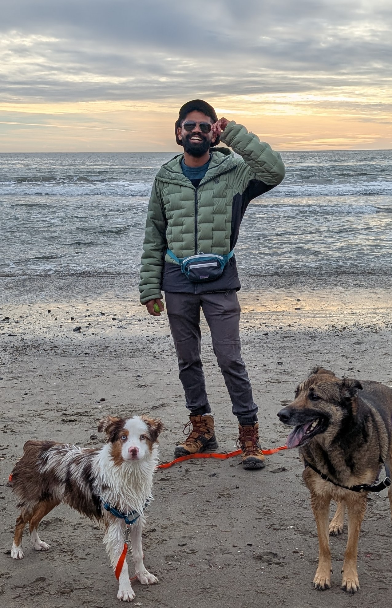

About Me
Nuclear engineer turned computer scientist with a passion for AI systems

Overview
I'm a nuclear engineer turned computer scientist with a deep understanding and love for computing systems. Currently focussed on building agentic software systems to build, test and maintain enterprise AI applications.
I also like dogs!
Professional Experience
Current Role
C3 AI
Senior Product Manager - AI Platform
Hired to build out the customer facing and internal observability stack for the C3 AI Platform. Led 0 -> 1 from inception to release. Over time also took responsibility of the CI/CD product line - mission critical system required for every production C3 AI deployment. Led R&D, scoping, design and execution of C3 Code - a coding agent agnostic enterprise software harness allowing domain experts (supply chain analysts, process engineers, etc.) to serve their software and AI needs.
- Led the 0 → 1 design, development, and launch of C3 Code, an agentic AI application builder that converts natural language into production-ready enterprise AI apps, complete with data models, workflows, AI systems and UI.
- Developed lighthouse customers to help shape the roadmap and built out processes (with agents) to iterate rapidly. Fastest user adoption in company history.
- Also led product vision for observability and CI/CD product line
May 2021 - Jun 2023
C3 AI
Staff Data Scientist & Instructor
Researching and teaching the science of building scalable, fault-tolerant, production-grade machine learning systems for enterprise applications. Specializing at the intersection of AI and dynamical physical systems.
- Teaching advanced ML system design for enterprise applications
- Researching fault-tolerance in production ML systems
- Developing curriculum and thought leadership at the intersection of AI and physical systems
Sep 2017 - May 2021
OSIsoft
Developer Support Engineer
Enabled customers from various industries to maximize value from their data through novel solutions for data ingress, egress, and storage using the PI System. As a Product Specialist for developer technologies, I helped customers build customized applications using our APIs and SDKs.
- Debugged and analyzed memory dumps from production systems
- Published customer-facing documentation on best practices
- Developed internal applications for real-time operations management
- Presented technical talks to various audiences
May 2017 - Aug 2017
Idaho National Laboratory
Nuclear Fuel Modeling & Simulation - Fuel Performance Intern
Worked on MOOSE - The Multiphysics Object-Oriented Simulation Environment (MOOSE) is a finite-element, multiphysics framework written in C++ primarily developed by Idaho National Laboratory. It provides a high-level interface to some of the most sophisticated nonlinear solver technology on the planet.
Developed the IAPWS95 submodule based on MOOSE to be used by BISON (fuel performance modelling application) and RELAP7 (system thermal hydraulics modelling). IAPWS95 builds an API wrapper around LibSBTL95 which is a library for the fast calculation of water and steam properties based on the Spline Based Table Lookup (SBTL) method. Also updated the BISON coolant channel model to support this new integration.
- Implemented API wrapper for high-performance calculations
- Contributed to the MOOSE finite-element framework
- Updated the BISON coolant channel model
Skills & Expertise
AI & Data Science
- Machine Learning Systems
- Reinforcement Learning
- Agentic AI Systems
- Bayesian Statistics
- Production ML Pipelines
Software Engineering
- High Performance Computing
- Distributed Systems
- API Design
- Cloud Infrastructure
- CI/CD Pipelines
Domain Expertise
- Computational Fluid Dynamics
- Finite Element Methods
- Nuclear Engineering
- Reliability Engineering
- Physical Systems Modeling
Education
2018-2020
Georgia Institute of Technology
Master of Science - MS, Computer Science - Machine Learning
Coursework: Reinforcement Learning, AI for Robotics, Knowledge Based AI, Machine Learning, Bayesian Statistics
2016-2017
North Carolina State University
Master's degree, Nuclear Engineering
Master's Scholar of the Year - College of Engineering
2012-2016
North Carolina State University
Bachelor of Science (B.S.), Nuclear Engineering
Contact Me
Feel free to reach out if you have any questions about my work in AI systems, machine learning, or if you'd like to collaborate on a project.